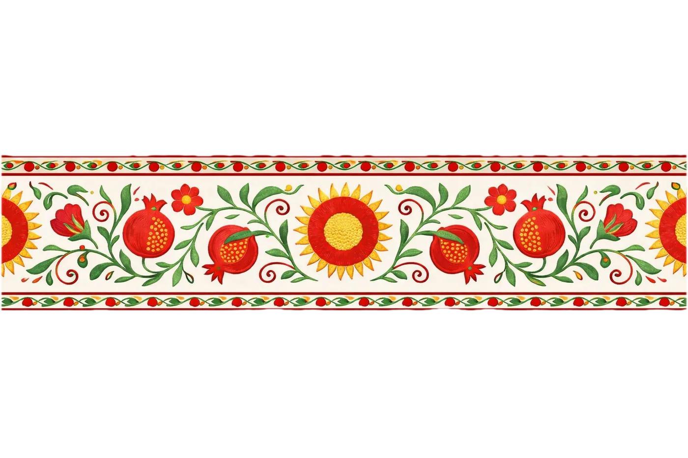
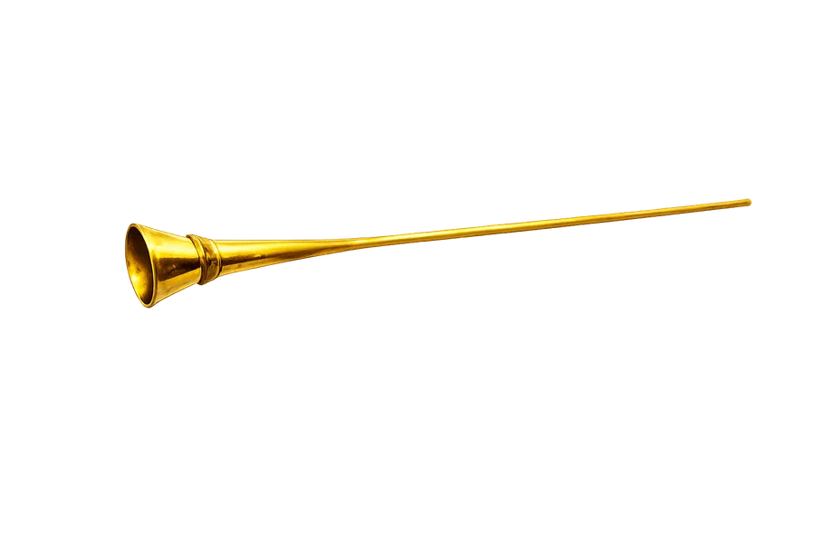
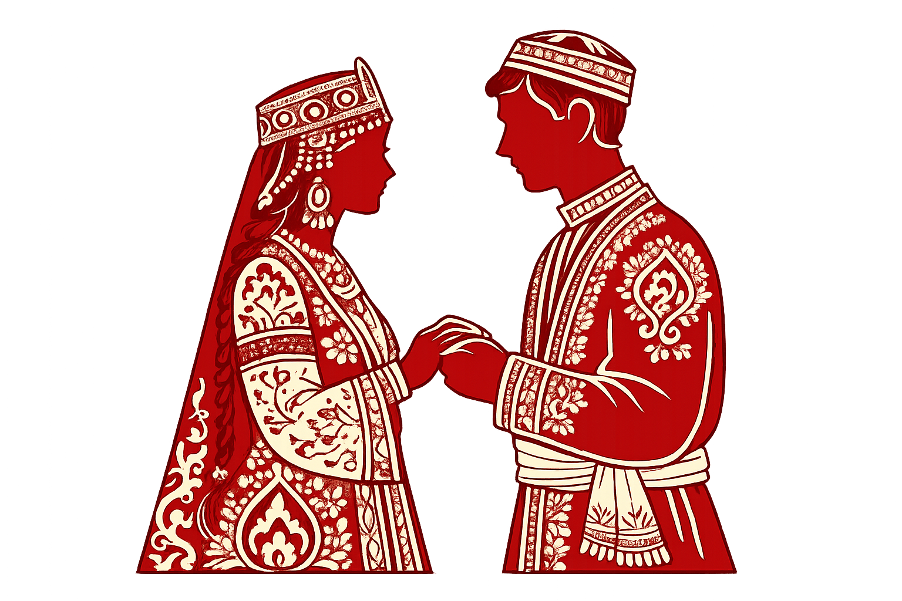
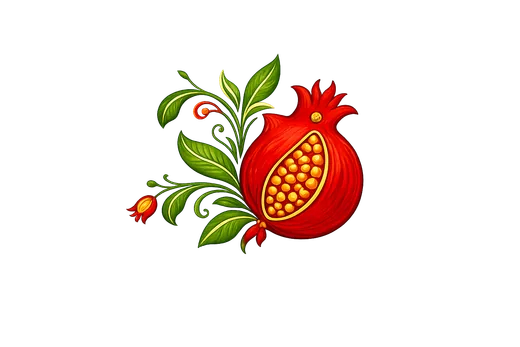
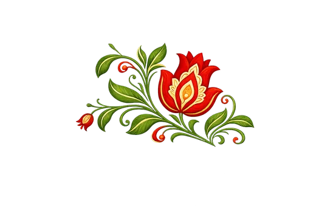

SIZNI TO'YIMIZGA taklif qilamiz
muhabbat ila,Dilshodbek va Nilufarxon


DilshodbekvaNilufarxon

Sizni nikoh to'yimiz munosabati bilan yoziladigan dasturxonimizga taklif etamiz.

11:00
Sherbudin
Bahouddin Naqshband ko'chasi, Buxoro
